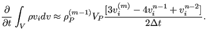

Next: Convective terms Up: Incompressible flow Previous: Divergence term Contents
For incompressible flow it has proven advantageous to use a second order scheme for all transient terms in the conservation equations. For instance, for the conservation of momentum equation this amounts to:
|  | (703) |